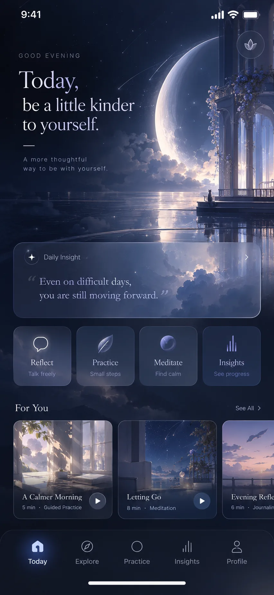
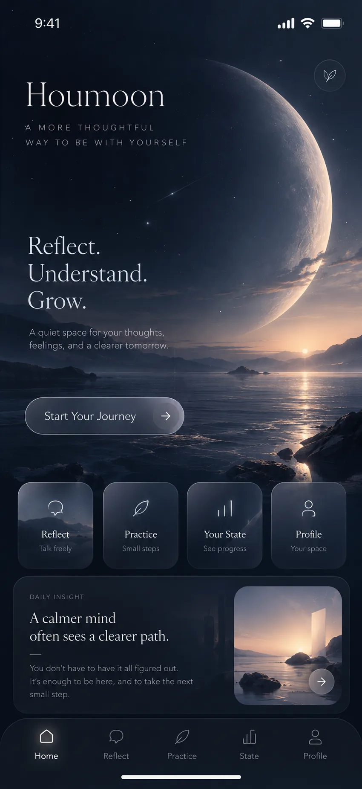
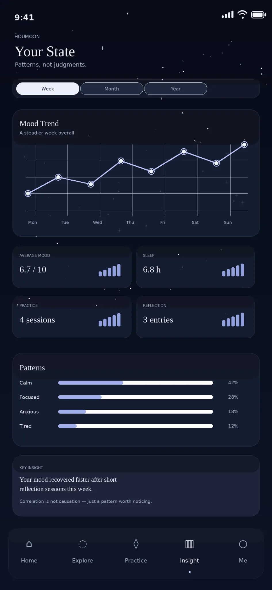
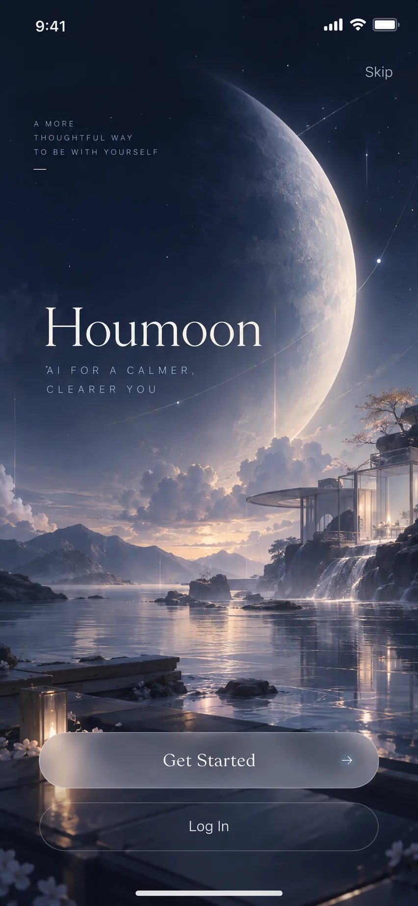

01 / Home
Home screen
A daily check-in, a prompt and a choice of where to start.

An archive · 2024—2026
A more thoughtful way to be with yourself.
Founded by Boyu Hou in 2024.
Dissolved in May 2026.
Houmoon was started in 2024 to test whether a conversational AI would make everyday reflection and emotional support easier to reach. The app was built as a wellbeing prototype. However, it was never offered as a clinical or medical service, and no version reached the public. Around 100 people tested the prototype internally before the work stopped in 2026.
These images were made after development stopped, to show the product direction. They are not screenshots of the prototype.
A daily check-in, a prompt and a choice of where to start.

A starting point for guided reflection, practice and a record of personal state.

Emotional state tracked over time. The figures are illustrative.

The first screen a new user would see.

Houmoon was designed as a mobile wellbeing app that drew on the Dao De Jing, the I Ching and the philosophy of Wang Yangming. Four modules were planned. The first was a daily feed of short philosophical passages, and the second was a practice area for meditation, journaling and breathing. The third covered the Five Elements and the I Ching, while the fourth was a Future Self dialogue with AI characters based on philosophical figures. The first prototype was built with React Native and Firebase between October 2024 and April 2025. However, it was archived because of technical debt and a widening scope, and a new code base was started. About 100 people used the app in internal testing, but no version was released publicly.
Houmoon Ltd incorporated in the United Kingdom, company number 15622617.
First prototype built with React Native and Firebase.
Prototype archived and a new code base started.
First Gazette notice for voluntary strike-off.
Company dissolved. No version of the app was released publicly.
The decision to close the company was made for two reasons. An app offering emotional support in the UK is subject to the boundary of medical regulation, and Houmoon had come close to it. Furthermore, a start-up visa after graduation had been planned as the route to continue the company in the UK. That plan was dropped. I decided to apply for graduate study in the United States instead, and the company was struck off the register in May 2026, before any public release.
I founded Houmoon in April 2024 while studying Computer Science and Electronics at the University of Bristol.
About Boyu Hou →Public record from Companies House